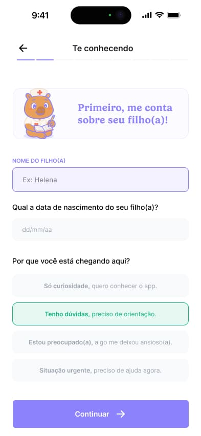
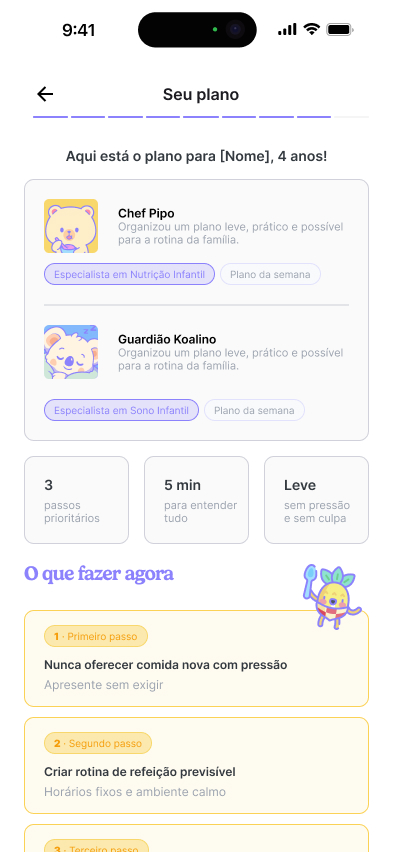
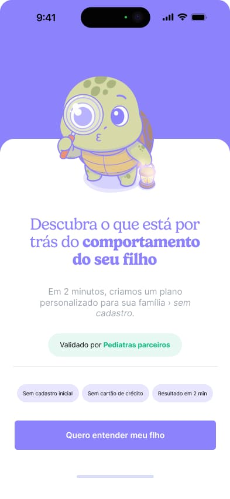
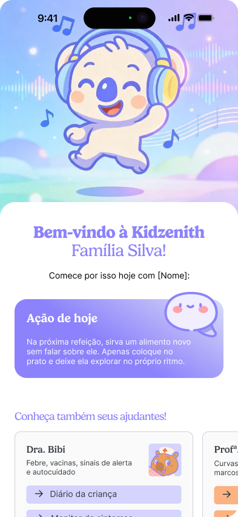

Entrada sem fricção
Problema: pedir cadastro cedo demais interrompe a curiosidade.
Decisão: abrir com uma promessa clara e emocional.
Efeito: mais disposição para continuar.Redesenho do fluxo de onboarding da Kidzenith para acolher famílias, reduzir fricção e acelerar o primeiro momento de valor. A proposta combina UX Writing, Motion com IA, UX Design, UI Design e prototipação com Claude.



O desafio era reduzir abandono sem empobrecer a experiência. O onboarding anterior explicava muito antes de entregar valor, tinha mais etapas do que o necessário e criava fricção antes do usuário entender o benefício do produto.
O onboarding foi reorganizado para não começar exigindo cadastro. A jornada primeiro acolhe a família, cria pequenos avanços e mostra valor percebido; só depois solicita uma ação de conversão.
Raciocínio de UX
Em vez de tratar o cadastro como ponto de partida, a experiência passa a construir contexto, desejo e segurança antes da decisão.
Problema: pedir cadastro cedo demais interrompe a curiosidade.
Decisão: abrir com uma promessa clara e emocional.
Efeito: mais disposição para continuar.Problema: perguntas longas aumentam carga cognitiva.
Decisão: dividir a jornada em escolhas simples por etapa.
Efeito: sensação de avanço contínuo.Problema: o usuário não entende por que deve criar conta.
Decisão: entregar um primeiro insight antes da conversão.
Efeito: cadastro passa a ter motivo.Problema: bloqueios sem explicação geram rejeição.
Decisão: apresentar o cadastro como acesso ao plano completo.
Efeito: menos interrupção, mais intenção.Os fundamentos não aparecem como teoria solta. Eles explicam por que a jornada foi reorganizada e como cada escolha reduz esforço, aumenta clareza e melhora a percepção de valor.
As informações aparecem em camadas, no momento certo, para evitar sobrecarga logo no início.
O fluxo transforma decisões grandes em passos menores, escaneáveis e mais fáceis de concluir.
Cada avanço precisa confirmar que a pessoa está no caminho certo e que a interação está gerando valor.
O usuário vê uma amostra do benefício antes de entregar dados ou assumir compromisso.
A linguagem visual e os personagens reduzem tensão e tornam o fluxo mais acolhedor para famílias.
Textos curtos ajudam a pessoa a entender o que está acontecendo, o que fazer e por que continuar.
As telas foram organizadas em um mockup central para valorizar o fluxo sem perder qualidade dos arquivos. Use as setas para navegar entre os principais momentos da experiência.

A primeira tela cria contexto, reduz objeções e apresenta a promessa de valor sem exigir cadastro.
O motion foi pensado para sustentar expectativa, suavizar transições e deixar o fluxo mais acolhedor. Com apoio de IA, as telas e personagens podem ganhar microinterações que reforçam o estado emocional de cada etapa.
Os carregamentos foram tratados como momentos de antecipação: curtos, úteis e conectados ao que está sendo analisado.
Os mascotes não aparecem como propaganda. Eles entram para apoiar a narrativa, acolher e reforçar o valor do plano.
O redesenho transforma o primeiro contato com a Kidzenith em uma experiência de acolhimento e descoberta. A conversão deixa de depender de pressão e passa a nascer de clareza, valor percebido e confiança.